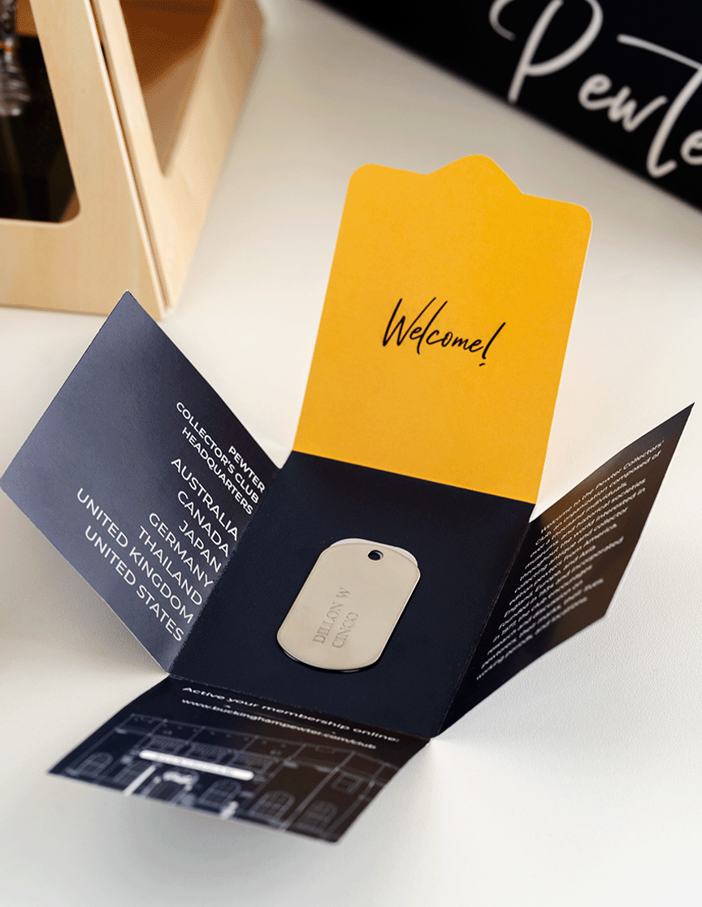
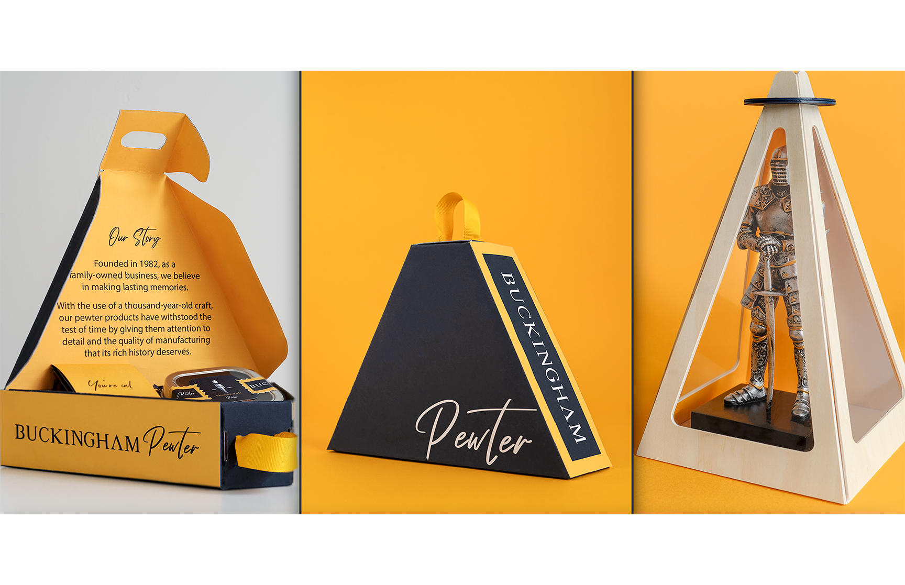
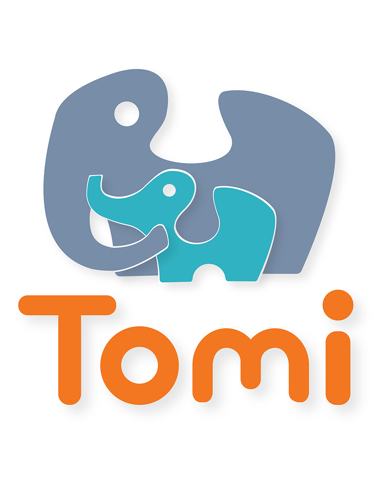
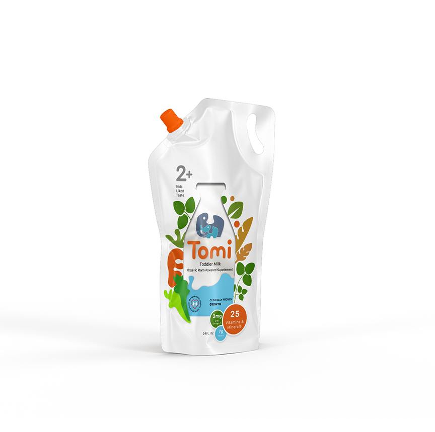
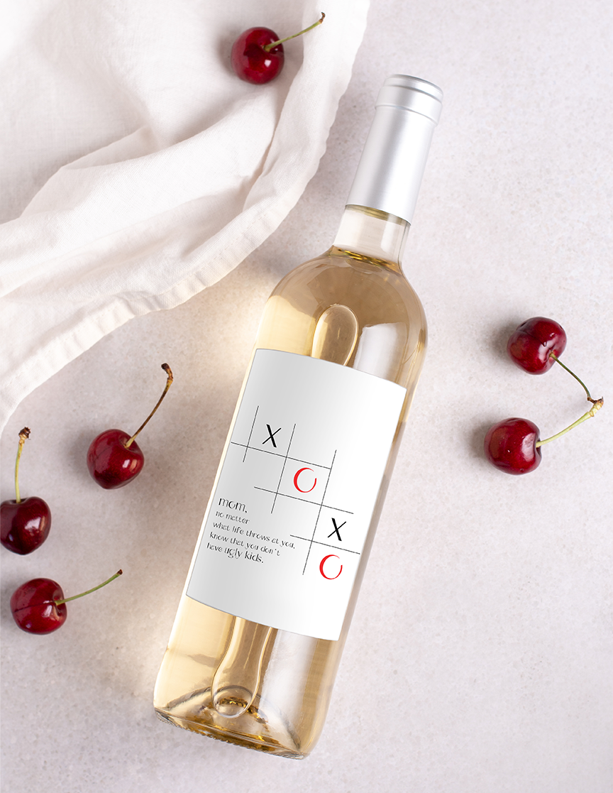
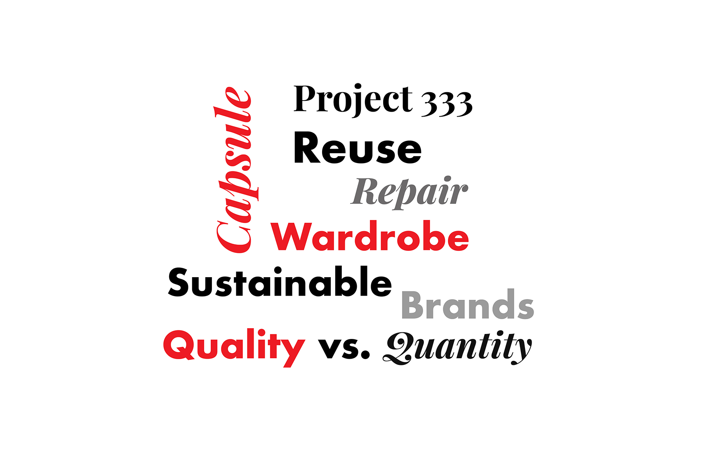
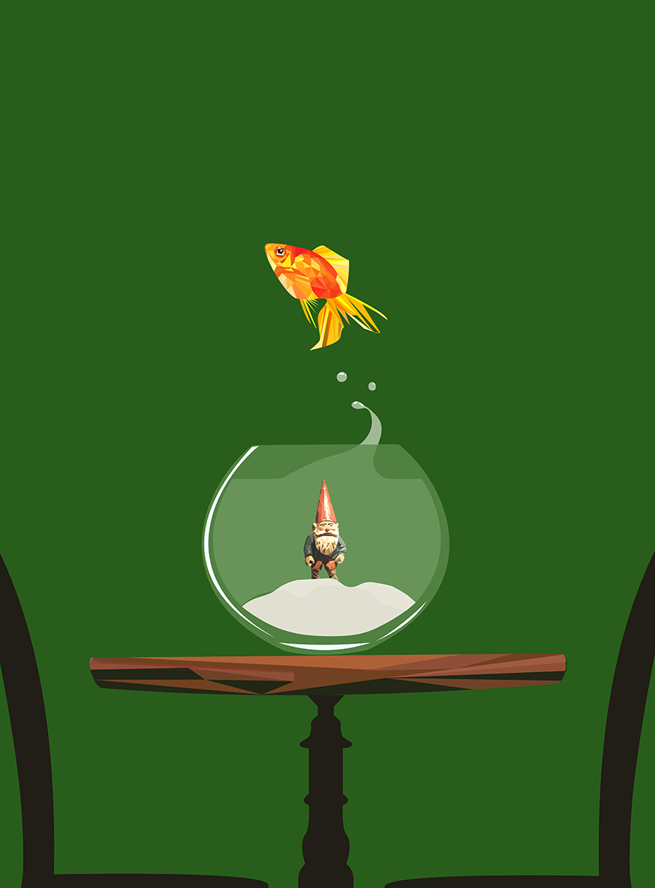
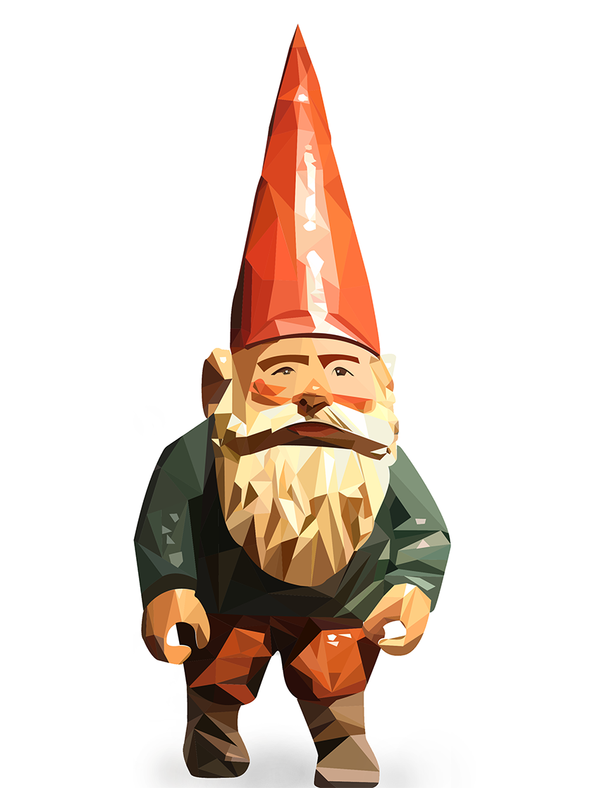
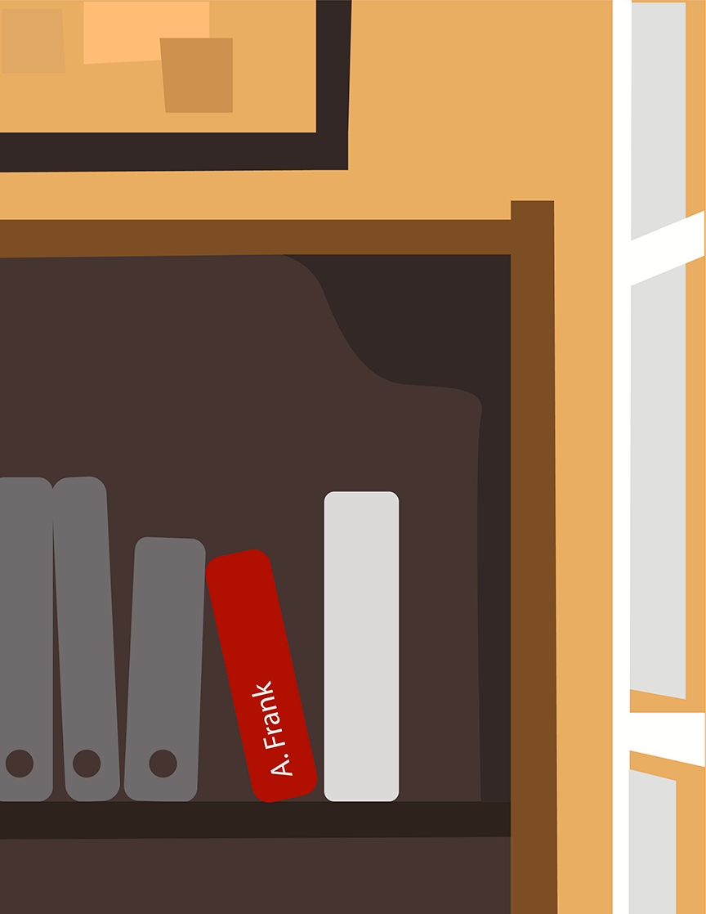
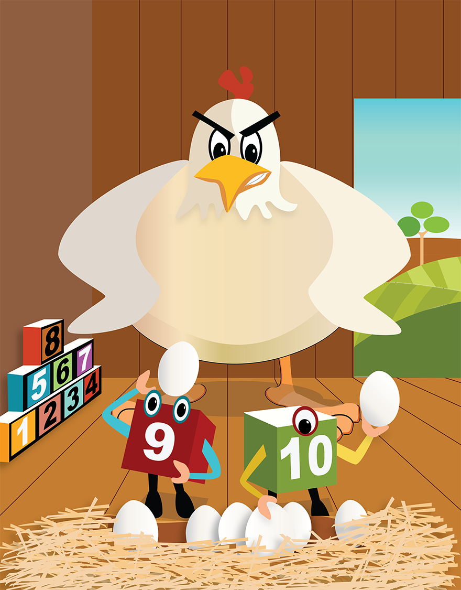

I love packaging. As much as I enjoy the digital aspects of my work, there is something to be said about being able to physically touch what you're creating. Three-dimensional objects are an area I am comfortable with.
My packaging design for Buckingham Pewter, a pewter company based in Australia, who pride themselves on quality products that have stood the test of time, started with the redesign of their logo as part of the rebranding project. To celebrate history and stories to be told for generations, I wanted to bring this beautiful old-world craftsmanship into the 21st century.
Tomi, on the other hand was a packaging idea for a fictitious company I created based on five different words provided as part of the project requirements. Tomi is a plant-based supplement for toddlers. Its name is a portmanteau of the words “toddler” and “milk”. With the market saturated with a lot of milk products, I opted for a different type of packaging not only for the intent of standing out on the shelves, but also for functionality reasons taking into consideration user need for something that is portable and easy for parents to use who have their hands full, especially, when they are on the go with young children.


At the beginning of my design journey, typography seemed so foreign. It was not due to a lack of interest or admiration, but to a profound understanding of its nature - as simple as its anatomy and its purposes. After becoming more familiar with it, I find myself deeply appreciating its significance, beauty, and what it could bring to any design I do.
Boop was my first project designing a font using Fontstruct, a font-building online tool using modular blocks or geometric shapes as part of the design constraint. While it added another layer of challenge, I was set on creating something that would be more fluid and organic.
The second typeface I created was Ophelia. During the pandemic, I watched one too many Netflix movies that I couldn’t help but create a font for a captivating character and protagonist. After a few hand-drawn iterations, I opted for the contrast of thin and thick lines and channeled Neo-classical and Humanist styles - a reflection of the character’s delicate nature. Ophelia’s design is intended for display applications; however, if used in smaller font sizes, it hides some of the decorations on certain letters. These decorations can only be appreciated when zoomed in, which reminds me of Ophelia’s story.



With User Experience, I learned to apply the Design Thinking Process starting with empathy. This training has helped me become a better designer. In contrast to my old knowledge, I now strive to approach design with a meaningful purpose, extending beyond aesthetics and facades.
One of the projects I made was to help address fast-fashion - to choose quality over quantity through the idea of a “Capsule Wardrobe.” Using personas, research and statistics, I wanted to create a way to educate, provide an array of better clothing options that would transcend fashion trends. I also aimed to boost the user’s confidence in dressing for their body type as well as cataloguing their clothes to save time planning "what to wear," including factoring in current local weather through an app - this part reminds me of Cher in the movie, Clueless.
The project below was an iteration of an app to go with a smart trashcan in order to help address United Nations' Goal #12: Sustainable Consumption and Production.



